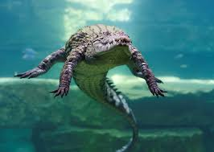
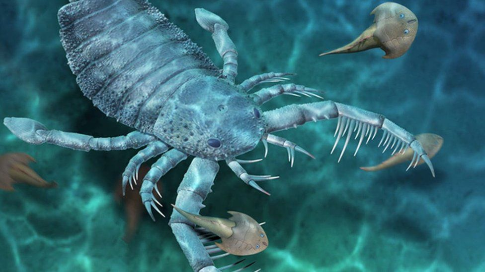
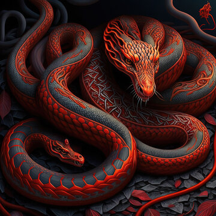
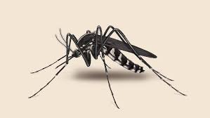

Top 5 most dangerous animals
5.lions

It kills 200 humans per year.
Characteristics
1.They have strong, compact bodies.
2.They have powerful forelegs
3.They have teeth and jaws for pulling down and killing prey
4.The adult males have shaggy manes that range in color from blond to reddish-brown to black
4.Crocodiles

It kills 1,000 humans per year.
Characteristics
1.They are large, prehistoric-looking reptiles
2.They are found throughout the world's hottest tropical regions
3.They have broad bodies
4.They have short legs
5.They have long, muscular tails
3.Scorpions

It kills 3,300 humans per year.
Characteristics
1.They are arthropods.
2.They have eight legs.
3.They have two pedipalps.
4.They have a tail with a venom-injecting barb.
2.Snakes

It kills 138,000 humans per year.
Characteristics
1.They have no limbs, voice, external ears, or eyelids.
2.They have only one functional lung, and a long, slender body.
3.Their skin is covered with scales.
4.They have good eyesight.
5.They continually taste the surrounding air with their tongues.
6.They are capable of hissing.
1.Mosquitoes

It kills 725,000 per year.
Characteristics
1.They have two pairs of wings, but their second pair of wings are reduced to short, peg-like structures called halteres.
2.They have thin, long bodies and three pairs of extremely long legs.
3.They have scales along the veins of their wings and long beak-like, sharp sucking mouth parts called a proboscis.
4.They also have feathery or hairy antennae.